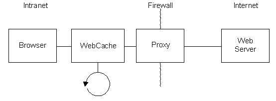
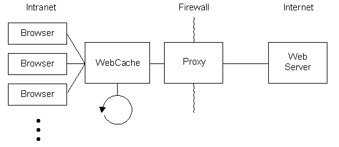
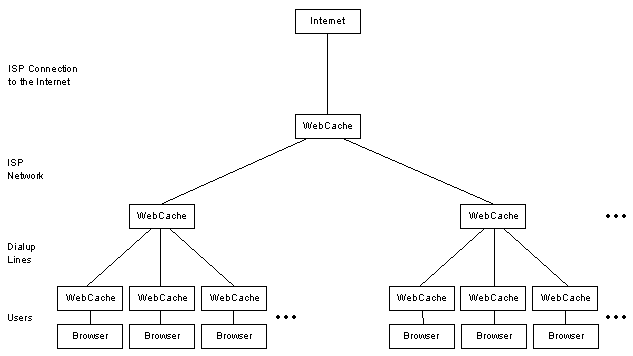

Overview
Theory of Operation
Setup and Startup
Future Enhancements
In a typical browsing configuration, without the use of a cache,
a proxy connects the browser on an intranet to a web server on the internet,
as shown schematically in Figure 1. The proxy passes data across
the firewall which otherwise isolates the intranet and internet.
When the user wishes to revisit a page, the content is refetched from the
web server across the internet.
When a WebCache is used to cache previously accessed pages, the browser connects to the cache as if it were the proxy, as shown schematically in Figure 2. This topology requires no change to the browser software beyond a simple reconfiguration, and no change to the proxy or web server. When the WebCache receives a request for a web page, it first checks its embedded DataTurbine server for the content. If the page is found, it simply returns it to the browser. If the page is not found, the WebCache passes the request on to the web server via the proxy. When the page is returned, the WebCache saves a copy in the DataTurbine and passes a copy to the browser. Subsequent requests for that page are then handled locally.

Figure 2. Typical browsing configuration with the use of a WebCache.
Other topologies are possible. While a browser's cache can reduce network traffic, it cannot be shared among many users. The WebCache can operate as a shared resource, as shown in Figure 3, wherein users have quick access to pages previously accessed by other users. This shared resource can be hosted by an ISP, to reduce their needed bandwidth to the Internet and improve response times, or it can be hosted by a workgroup, to similarly reduce the load on their connection to the ISP.

Figure 3. Use of a WebCache as a shared resource.
Multiple WebCaches can be configured in a hierarchical fashion, with peer-to-peer connections*, for scalability with local control. An ISP hosting many dialup connections could be configured with each user having a local WebCache, and the ISP hosting a WebCache at the central network link to the internet and at each dialup location. Figure 4 shows the topology, which serves to minimize traffic across each layer of the network to offer users unprecedented performance without expensive upgrades. User's requests are handled on their own machine, then passed to their dialup location if needed, then passed to the central ISP if needed, and only sent to the original web server on the internet if no user at the ISP had recently requested the same page.

Figure 4. Use of multiple WebCaches to improve an ISP's performance.
*peer-to-peer connections are implemented at the DataTurbine level, but not yet implemented at the WebCache level
WebCache needs to be run under a Java Virtual Machine (JVM).
Start the application from the command line as:
java -jar webcache.jarThere are several command line options, summarized in the table below.
| Flag | Parameter | Default | Description |
| -h | prints usage info to console, then quits | ||
| -s | serversocket | 6677 | socket webcache listens on |
| -p | proxy | none | web proxy webcache connects to, as host:port |
| -r | rbnbSocket | 3333 | server socket of embedded RBNB server |
| -c | cache frames | 1000 | number of web objects cached in memory |
| -a | archive frames | number of web objects cached on disk.
default is number in existing archive, or number cached in memory if new archive |
|
| -n | create a new archive (default: append to existing) | ||
| -d | level | 0 | print out debug info as application runs |
Upon startup, WebCache creates an internal RBNB server, and begins listening for connections from browsers on the specified serversocket. A new thread is spawned to handle each connection.
Incoming requests are parsed. If the request is for anything other than the protocol http and the command GET, no caching is done. The request is passed on to the proxy, and the results passed back to the browser. If the request is for http and GET, the DataTurbine is checked. If the page is found, it is returned to the browser. If the page is not found, the request is passed on to the proxy (if specified) or the originating web server. When the proxy or web server returns the page, it is passed on to the browser and a copy parsed. If the page's status code is 200 OK, the page is written to the DataTurbine. Pages with other status codes are not cached. This ensures that only complete web objects are placed into the cache, eliminating conflicts between browser's built in caches and the WebCache.
Additionally, when a request is answered from the cache, a background update of that object is started. This allows for updated content to be obtained and put in the cache. Users wishing to see the updated content simply hit the 'Reload' button on their browsers. This approach of performing background updates avoids waiting for web access yet allows for new content to be viewed. In order to minimize network bandwidth usage, modification dates are parsed, and "If-Modified-Since" requests and "Not Modified" responses sent when appropriate.